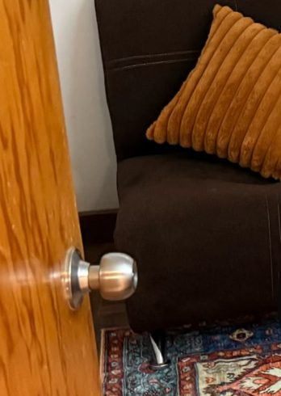

Clínica Cuicuilco
Av. San Fernando 649, Casa G, Manantial Peña Pobre, Tlalpan, 14060Estacionamiento en Plaza Cuicuilco.
Abrir en Maps: Clínica CuicuilcoPsiquiatría y psiquiatría de enlace

Psiquiatra de adultos en Tlalpan, el Pedregal y por video. Ansiedad, depresión, trauma y crisis, con evaluación cuidadosa y sin juicios.
Céd. profesional 12848096 · Céd. especialidad 15944678
Situaciones que atiende en adultos. La primera consulta sirve para valorar la tuya, aunque no esté en la lista.
¿Es una crisis ahora? Llama a la Línea de la Vida 800 911 2000 o al 911.
Preocupación constante, tensión o crisis de angustia que ya pesan en el trabajo, el sueño o tus relaciones.
Tristeza que no se va, cansancio, falta de interés. Se valora qué tratamiento hace falta, si hace falta.
Recuerdos que irrumpen, sobresaltos o evitar lugares después de una experiencia difícil.
Emociones intensas que cambian rápido, impulsividad, relaciones que se rompen. Trastorno límite de la personalidad.
Atención psiquiátrica para adultos en el espectro autista.
Intervención en crisis: recuperar estabilidad tras un momento agudo y ordenar los siguientes pasos.
Psiquiatría de enlace para quien está en tratamiento por otra enfermedad, en diálogo con su equipo médico; psicoeducación para entender el diagnóstico.

El consultorio, al abrir la puerta.
En la agenda o por WhatsApp.
Por WhatsApp, con la dirección o el enlace de video.
Hablas de lo que te pasa, tu historia y tu contexto.
Te explica lo que observa y las opciones; si hace falta, se acuerda seguimiento.
«Elegí la psiquiatría porque el sufrimiento psíquico rara vez es evidente, pero siempre es profundo. Mi objetivo no es solo disminuir síntomas, sino promover estabilidad a largo plazo.»
Pacientes privados, sin aseguradoras.
MXN · efectivo o transferencia · según su perfil de Doctoralia; pueden cambiar.
Solo con cita.
Estacionamiento en Plaza Cuicuilco.
Abrir en Maps: Clínica CuicuilcoSegundo consultorio.
Abrir en Maps: SOMA Medicina IntegralVideoconsulta desde un lugar privado y con buena conexión.
«Súper amable, muy puntual… nunca me he sentido juzgado con él.»
«Se toma el tiempo de explicar el diagnóstico con claridad.»
«Trato muy profesional y humano; lleva el tratamiento de mi hijo desde hace año y medio.»
«Muy dedicado. Excelente explicando.»
Si tienes estudios, recetas o la lista de medicamentos que tomas, tenlos a la mano.
No. Solo pacientes privados; pago en efectivo o transferencia.
Sí, por telepsiquiatría ($1,500), desde un lugar privado.
Sí, como toda consulta médica. Esta web solo pide datos de contacto.